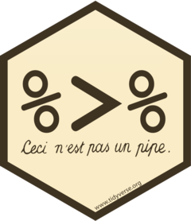
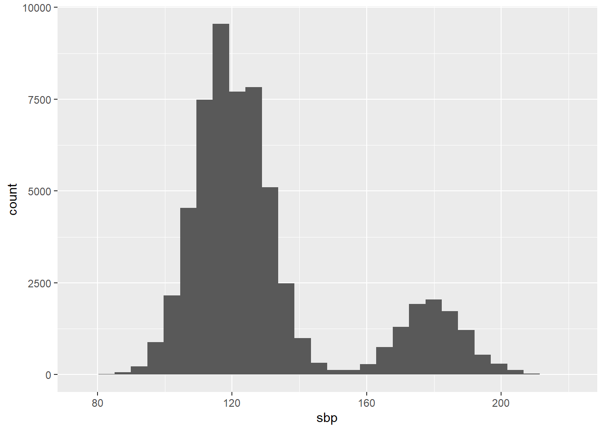
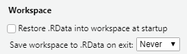

library(tidyverse)
library(medicaldata)
library(readxl)
library(writexl)Session 2
Data wrangling
Session 2: Data wrangling

Agenda
- Pipes in R
- Selecting columns; filtering and sorting rows
- Creating new columns
- Grouping and summarizing
- Random sampling of rows
- Data cleaning: tidy data, missing values
- Exporting data from R
Most of what we are doing today is in the {dplyr} and {tidyr} packages. These PDF cheat sheets are a handy reference: dplyr, tidyr
Pipes in R
The pipe is an operator, written %>%, that enables us to pass the output from one function, into another function. Consider:
my_values <- -1:-10 # -1 to -10, as a vector
my_values [1] -1 -2 -3 -4 -5 -6 -7 -8 -9 -10# below i take the absolute value, then the square root,
# then round to 3 decimal places, then calculate the mean
mean(round(sqrt(abs(my_values)), 3))[1] 2.2467# with a pipe, this can be rewritten as:
my_values %>%
abs() %>%
sqrt() %>%
round(3) %>%
mean()[1] 2.2467# more readable, right?The keyboard shortcut for %>% is Ctrl+Shift+M (Windows) or Cmd+Shift+M (macOS).
You might also see a newer notation for the pipe, |>. It works the same way:
my_values |>
abs() |>
sqrt() |>
round(3) |>
mean()[1] 2.2467We’ll be using the first pipe, also called “the magrittr pipe” after the package it comes from.

Looking at data frames
print(), str(),View(),summary()`
cvdrisk <- read_csv("data/genoData.csv")Rows: 59874 Columns: 17
── Column specification ────────────────────────────────────────────────────────
Delimiter: ","
chr (13): patientID, age, htn, treat, smoking, race, t2d, gender, rs10757278...
dbl (4): numAge, bmi, tchol, sbp
ℹ Use `spec()` to retrieve the full column specification for this data.
ℹ Specify the column types or set `show_col_types = FALSE` to quiet this message.cvdrisk %>% print()# A tibble: 59,874 × 17
patie…¹ age htn treat smoking race t2d gender numAge bmi tchol sbp
<chr> <chr> <chr> <chr> <chr> <chr> <chr> <chr> <dbl> <dbl> <dbl> <dbl>
1 HHUID0… 20-40 N N N White N F 37 22 175 113
2 HHUID0… 20-40 N N N White N F 32 25 156 116
3 HHUID0… 40-55 Y N N White N F 40 23 243 193
4 HHUID0… 20-40 Y Y N White N F 32 23 157 183
5 HHUID0… 20-40 N N N White N M 29 17 156 131
6 HHUID0… 40-55 Y N N White N F 40 25 193 164
7 HHUID0… 40-55 N N N Asia… Y M 43 25 196 120
8 HHUID0… 20-40 Y Y N White N F 20 17 238 188
9 HHUID0… 20-40 N N N Asia… N F 37 21 195 113
10 HHUID0… 20-40 N N N White N M 24 23 240 125
# … with 59,864 more rows, 5 more variables: rs10757278 <chr>, rs1333049 <chr>,
# rs4665058 <chr>, rs8055236 <chr>, cvd <chr>, and abbreviated variable name
# ¹patientID
# ℹ Use `print(n = ...)` to see more rows, and `colnames()` to see all variable namesGet a histogram of a variable
ggplot(cvdrisk, aes(sbp)) + geom_histogram()`stat_bin()` using `bins = 30`. Pick better value with `binwidth`.
Selecting columns; filtering and sorting rows
select(): which columns?
cvdrisk# A tibble: 59,874 × 17
patie…¹ age htn treat smoking race t2d gender numAge bmi tchol sbp
<chr> <chr> <chr> <chr> <chr> <chr> <chr> <chr> <dbl> <dbl> <dbl> <dbl>
1 HHUID0… 20-40 N N N White N F 37 22 175 113
2 HHUID0… 20-40 N N N White N F 32 25 156 116
3 HHUID0… 40-55 Y N N White N F 40 23 243 193
4 HHUID0… 20-40 Y Y N White N F 32 23 157 183
5 HHUID0… 20-40 N N N White N M 29 17 156 131
6 HHUID0… 40-55 Y N N White N F 40 25 193 164
7 HHUID0… 40-55 N N N Asia… Y M 43 25 196 120
8 HHUID0… 20-40 Y Y N White N F 20 17 238 188
9 HHUID0… 20-40 N N N Asia… N F 37 21 195 113
10 HHUID0… 20-40 N N N White N M 24 23 240 125
# … with 59,864 more rows, 5 more variables: rs10757278 <chr>, rs1333049 <chr>,
# rs4665058 <chr>, rs8055236 <chr>, cvd <chr>, and abbreviated variable name
# ¹patientID
# ℹ Use `print(n = ...)` to see more rows, and `colnames()` to see all variable namesstr(cvdrisk) # 17 variables (columns)spec_tbl_df [59,874 × 17] (S3: spec_tbl_df/tbl_df/tbl/data.frame)
$ patientID : chr [1:59874] "HHUID00520605" "HHUID00576813" "HHUID00957042" "HHUID00226899" ...
$ age : chr [1:59874] "20-40" "20-40" "40-55" "20-40" ...
$ htn : chr [1:59874] "N" "N" "Y" "Y" ...
$ treat : chr [1:59874] "N" "N" "N" "Y" ...
$ smoking : chr [1:59874] "N" "N" "N" "N" ...
$ race : chr [1:59874] "White" "White" "White" "White" ...
$ t2d : chr [1:59874] "N" "N" "N" "N" ...
$ gender : chr [1:59874] "F" "F" "F" "F" ...
$ numAge : num [1:59874] 37 32 40 32 29 40 43 20 37 24 ...
$ bmi : num [1:59874] 22 25 23 23 17 25 25 17 21 23 ...
$ tchol : num [1:59874] 175 156 243 157 156 193 196 238 195 240 ...
$ sbp : num [1:59874] 113 116 193 183 131 164 120 188 113 125 ...
$ rs10757278: chr [1:59874] "AA" "AA" "AA" "AA" ...
$ rs1333049 : chr [1:59874] "CC" "CC" "CC" "CC" ...
$ rs4665058 : chr [1:59874] "CC" "CC" "AA" "CC" ...
$ rs8055236 : chr [1:59874] "TT" "TT" "TT" "GG" ...
$ cvd : chr [1:59874] "N" "N" "N" "N" ...
- attr(*, "spec")=
.. cols(
.. patientID = col_character(),
.. age = col_character(),
.. htn = col_character(),
.. treat = col_character(),
.. smoking = col_character(),
.. race = col_character(),
.. t2d = col_character(),
.. gender = col_character(),
.. numAge = col_double(),
.. bmi = col_double(),
.. tchol = col_double(),
.. sbp = col_double(),
.. rs10757278 = col_character(),
.. rs1333049 = col_character(),
.. rs4665058 = col_character(),
.. rs8055236 = col_character(),
.. cvd = col_character()
.. )
- attr(*, "problems")=<externalptr> cvdrisk %>%
select(numAge, gender, bmi, treat)# A tibble: 59,874 × 4
numAge gender bmi treat
<dbl> <chr> <dbl> <chr>
1 37 F 22 N
2 32 F 25 N
3 40 F 23 N
4 32 F 23 Y
5 29 M 17 N
6 40 F 25 N
7 43 M 25 N
8 20 F 17 Y
9 37 F 21 N
10 24 M 23 N
# … with 59,864 more rows
# ℹ Use `print(n = ...)` to see more rows# how many columns do we have? how many rows?
# notice that the column order is also different
# you can also select using index numbers:
cvdrisk %>%
select(3:7)# A tibble: 59,874 × 5
htn treat smoking race t2d
<chr> <chr> <chr> <chr> <chr>
1 N N N White N
2 N N N White N
3 Y N N White N
4 Y Y N White N
5 N N N White N
6 Y N N White N
7 N N N Asian/PI Y
8 Y Y N White N
9 N N N Asian/PI N
10 N N N White N
# … with 59,864 more rows
# ℹ Use `print(n = ...)` to see more rowsfilter(): which rows?

cvdrisk %>%
filter(numAge == 19) %>%
select(patientID, numAge, smoking)# A tibble: 716 × 3
patientID numAge smoking
<chr> <dbl> <chr>
1 HHUID00164346 19 N
2 HHUID00802705 19 N
3 HHUID00782633 19 N
4 HHUID00732619 19 N
5 HHUID00732812 19 Y
6 HHUID00293504 19 N
7 HHUID00506980 19 N
8 HHUID00944871 19 N
9 HHUID00158191 19 N
10 HHUID00786858 19 N
# … with 706 more rows
# ℹ Use `print(n = ...)` to see more rowscvdrisk %>%
filter(tchol > 200)# A tibble: 15,797 × 17
patie…¹ age htn treat smoking race t2d gender numAge bmi tchol sbp
<chr> <chr> <chr> <chr> <chr> <chr> <chr> <chr> <dbl> <dbl> <dbl> <dbl>
1 HHUID0… 40-55 Y N N White N F 40 23 243 193
2 HHUID0… 20-40 Y Y N White N F 20 17 238 188
3 HHUID0… 20-40 N N N White N M 24 23 240 125
4 HHUID0… 20-40 Y Y N White N F 23 24 235 201
5 HHUID0… 40-55 N N N White N F 41 22 243 118
6 HHUID0… 20-40 N N N White N F 33 33 204 122
7 HHUID0… 40-55 N N N Blac… N M 42 21 244 139
8 HHUID0… 20-40 N N N Blac… N M 29 24 242 112
9 HHUID0… 20-40 N N N Blac… N M 31 23 219 120
10 HHUID0… 20-40 N N N White N M 30 19 228 128
# … with 15,787 more rows, 5 more variables: rs10757278 <chr>, rs1333049 <chr>,
# rs4665058 <chr>, rs8055236 <chr>, cvd <chr>, and abbreviated variable name
# ¹patientID
# ℹ Use `print(n = ...)` to see more rows, and `colnames()` to see all variable names# comparisons: > >= < <= == !=
# check multiple values with the %in% operator, and a vector:
cvdrisk %>%
filter(race %in% c("Black/AfAm", "AmInd"))# A tibble: 3,630 × 17
patie…¹ age htn treat smoking race t2d gender numAge bmi tchol sbp
<chr> <chr> <chr> <chr> <chr> <chr> <chr> <chr> <dbl> <dbl> <dbl> <dbl>
1 HHUID0… 40-55 N N N Blac… N M 42 21 244 139
2 HHUID0… 20-40 N N N AmInd N F 28 19 165 124
3 HHUID0… 20-40 N N N Blac… N M 29 24 242 112
4 HHUID0… 20-40 N N N Blac… N M 31 23 219 120
5 HHUID0… 20-40 N N N Blac… N F 34 23 243 113
6 HHUID0… 20-40 N N N Blac… Y F 31 19 231 99
7 HHUID0… 20-40 N N N Blac… N F 27 20 218 120
8 HHUID0… 40-55 Y N N Blac… N F 42 23 228 173
9 HHUID0… 20-40 N N N Blac… N F 35 24 241 123
10 HHUID0… 20-40 N N N Blac… N M 30 19 243 109
# … with 3,620 more rows, 5 more variables: rs10757278 <chr>, rs1333049 <chr>,
# rs4665058 <chr>, rs8055236 <chr>, cvd <chr>, and abbreviated variable name
# ¹patientID
# ℹ Use `print(n = ...)` to see more rows, and `colnames()` to see all variable namescvdrisk %>%
distinct(race)# A tibble: 4 × 1
race
<chr>
1 White
2 Asian/PI
3 Black/AfAm
4 AmInd # BMI is between 25 and 30 (inclusive):
cvdrisk %>%
filter(between(bmi, 25, 30))# A tibble: 8,428 × 17
patie…¹ age htn treat smoking race t2d gender numAge bmi tchol sbp
<chr> <chr> <chr> <chr> <chr> <chr> <chr> <chr> <dbl> <dbl> <dbl> <dbl>
1 HHUID0… 20-40 N N N White N F 32 25 156 116
2 HHUID0… 40-55 Y N N White N F 40 25 193 164
3 HHUID0… 40-55 N N N Asia… Y M 43 25 196 120
4 HHUID0… 20-40 N N N Asia… N F 26 26 160 105
5 HHUID0… 20-40 N N N White N F 31 25 194 102
6 HHUID0… 20-40 N N N White N F 24 25 159 123
7 HHUID0… 20-40 N N N White N F 22 29 156 128
8 HHUID0… 40-55 Y N N Asia… N M 43 25 157 177
9 HHUID0… 40-55 Y Y N White N M 44 26 233 193
10 HHUID0… 20-40 N N Y White N F 30 25 160 108
# … with 8,418 more rows, 5 more variables: rs10757278 <chr>, rs1333049 <chr>,
# rs4665058 <chr>, rs8055236 <chr>, cvd <chr>, and abbreviated variable name
# ¹patientID
# ℹ Use `print(n = ...)` to see more rows, and `colnames()` to see all variable namesMultiple conditions can be combined with the symbols & (ampersand, “AND”) and | (vertical pipe, “OR”).
cvdrisk %>%
filter(between(numAge, 19, 24) & smoking == "Y")# A tibble: 1,412 × 17
patie…¹ age htn treat smoking race t2d gender numAge bmi tchol sbp
<chr> <chr> <chr> <chr> <chr> <chr> <chr> <chr> <dbl> <dbl> <dbl> <dbl>
1 HHUID0… 20-40 N N Y White N F 24 35 157 128
2 HHUID0… 20-40 N N Y White N M 24 15 198 132
3 HHUID0… 20-40 Y Y Y White N M 20 24 243 180
4 HHUID0… 20-40 N N Y Asia… N M 24 21 177 107
5 HHUID0… 20-40 Y N Y White N M 22 27 159 178
6 HHUID0… 20-40 Y Y Y White N F 24 18 160 189
7 HHUID0… 20-40 N N Y White N F 21 25 243 122
8 HHUID0… 20-40 N N Y Asia… Y M 22 28 156 112
9 HHUID0… 20-40 N N Y White N F 21 20 179 122
10 HHUID0… 20-40 N N Y White N F 24 19 227 117
# … with 1,402 more rows, 5 more variables: rs10757278 <chr>, rs1333049 <chr>,
# rs4665058 <chr>, rs8055236 <chr>, cvd <chr>, and abbreviated variable name
# ¹patientID
# ℹ Use `print(n = ...)` to see more rows, and `colnames()` to see all variable namescvdrisk %>%
filter(between(numAge, 19, 24) | smoking == "Y")# A tibble: 17,417 × 17
patie…¹ age htn treat smoking race t2d gender numAge bmi tchol sbp
<chr> <chr> <chr> <chr> <chr> <chr> <chr> <chr> <dbl> <dbl> <dbl> <dbl>
1 HHUID0… 20-40 Y Y N White N F 20 17 238 188
2 HHUID0… 20-40 N N N White N M 24 23 240 125
3 HHUID0… 20-40 Y Y N White N F 23 24 235 201
4 HHUID0… 20-40 N N Y White N F 29 20 164 127
5 HHUID0… 20-40 N N N White N F 24 25 159 123
6 HHUID0… 20-40 N N N White N F 22 29 156 128
7 HHUID0… 20-40 Y N N White N F 24 19 162 188
8 HHUID0… 20-40 Y N Y Asia… N F 39 24 172 174
9 HHUID0… 20-40 N N Y White N F 40 21 197 112
10 HHUID0… 20-40 N N N Asia… N M 23 20 193 115
# … with 17,407 more rows, 5 more variables: rs10757278 <chr>, rs1333049 <chr>,
# rs4665058 <chr>, rs8055236 <chr>, cvd <chr>, and abbreviated variable name
# ¹patientID
# ℹ Use `print(n = ...)` to see more rows, and `colnames()` to see all variable namesarrange(): in what order should the rows appear?
# sort by numAge:
cvdrisk %>%
filter(between(bmi, 25, 26)) %>%
arrange(numAge)# A tibble: 4,453 × 17
patie…¹ age htn treat smoking race t2d gender numAge bmi tchol sbp
<chr> <chr> <chr> <chr> <chr> <chr> <chr> <chr> <dbl> <dbl> <dbl> <dbl>
1 HHUID0… 0-20 N N Y White N F 19 25 244 116
2 HHUID0… 0-20 N N N White N F 19 25 243 102
3 HHUID0… 0-20 N N N White N M 19 25 182 120
4 HHUID0… 0-20 N N N White N M 19 25 244 123
5 HHUID0… 0-20 N N N Asia… N M 19 25 229 133
6 HHUID0… 0-20 N N N Asia… N F 19 25 155 119
7 HHUID0… 0-20 N N N Asia… N F 19 25 196 127
8 HHUID0… 0-20 N N N White N F 19 25 156 102
9 HHUID0… 0-20 N N N White N M 19 25 242 134
10 HHUID0… 0-20 N N N White N M 19 25 245 137
# … with 4,443 more rows, 5 more variables: rs10757278 <chr>, rs1333049 <chr>,
# rs4665058 <chr>, rs8055236 <chr>, cvd <chr>, and abbreviated variable name
# ¹patientID
# ℹ Use `print(n = ...)` to see more rows, and `colnames()` to see all variable names# sort by numAge, descending (oldest first):
cvdrisk %>%
filter(between(bmi, 25, 26)) %>%
arrange(desc(numAge))# A tibble: 4,453 × 17
patie…¹ age htn treat smoking race t2d gender numAge bmi tchol sbp
<chr> <chr> <chr> <chr> <chr> <chr> <chr> <chr> <dbl> <dbl> <dbl> <dbl>
1 HHUID0… 40-55 Y Y N White N M 44 26 233 193
2 HHUID0… 40-55 N N N White N M 44 25 180 130
3 HHUID0… 40-55 Y N N White N F 44 25 158 180
4 HHUID0… 40-55 Y Y N White N F 44 25 242 183
5 HHUID0… 40-55 N N N White N F 44 25 195 121
6 HHUID0… 40-55 N N N White N F 44 25 155 112
7 HHUID0… 40-55 Y Y N Asia… N F 44 25 234 181
8 HHUID0… 40-55 N N N White Y M 44 25 180 114
9 HHUID0… 40-55 N N N White N M 44 25 157 126
10 HHUID0… 40-55 N N N White Y M 44 25 242 128
# … with 4,443 more rows, 5 more variables: rs10757278 <chr>, rs1333049 <chr>,
# rs4665058 <chr>, rs8055236 <chr>, cvd <chr>, and abbreviated variable name
# ¹patientID
# ℹ Use `print(n = ...)` to see more rows, and `colnames()` to see all variable names# sort by multiple columns:
cvdrisk %>%
arrange(numAge, desc(bmi))# A tibble: 59,874 × 17
patie…¹ age htn treat smoking race t2d gender numAge bmi tchol sbp
<chr> <chr> <chr> <chr> <chr> <chr> <chr> <chr> <dbl> <dbl> <dbl> <dbl>
1 HHUID0… 0-20 N N N White N M 19 36 180 111
2 HHUID0… 0-20 N N N White Y M 19 36 155 119
3 HHUID0… 0-20 N N N White N F 19 36 242 119
4 HHUID0… 0-20 N N N White N M 19 36 158 134
5 HHUID0… 0-20 N N N White N M 19 36 155 121
6 HHUID0… 0-20 N N N White Y M 19 36 157 126
7 HHUID0… 0-20 N N Y Blac… N F 19 35 158 117
8 HHUID0… 0-20 N N N White N M 19 35 171 123
9 HHUID0… 0-20 N N N White Y F 19 35 225 97
10 HHUID0… 0-20 N N N White Y M 19 35 186 113
# … with 59,864 more rows, 5 more variables: rs10757278 <chr>, rs1333049 <chr>,
# rs4665058 <chr>, rs8055236 <chr>, cvd <chr>, and abbreviated variable name
# ¹patientID
# ℹ Use `print(n = ...)` to see more rows, and `colnames()` to see all variable namesExercise 1
- Using
filter(), get patients aged 30+ whose systolic blood pressure is greater than 135. Store this set as an object calledhigh_bp.
high_bp <- cvdrisk %>% filter(numAge >= 30 & sbp > 135)- Sort
high_bpaccording to numeric age and systolic blood pressure.
high_bp %>%
arrange(numAge, sbp) %>% View()- Why doesn’t the code below work? Can you fix it?
cvdrisk %>%
select(age, htn, treat, smoking, race, t2d, gender, bmi) %>%
filter(t2d == "Y") %>%
arrange(numAge)mutate(): Creating new columns

Example using the smartpill dataset:
str(smartpill)'data.frame': 95 obs. of 22 variables:
$ Group : num 0 0 0 0 0 0 0 0 1 1 ...
$ Gender : num 1 1 1 1 0 1 1 0 1 0 ...
$ Race : num NA NA NA NA NA NA NA NA 1 1 ...
$ Height : num 183 180 180 175 152 ...
$ Weight : num 102.1 102.1 68 69.9 44.9 ...
$ Age : num 25 39 44 53 57 43 38 23 21 24 ...
$ GE.Time : num 74.3 73.3 4.3 NA 13.9 23.3 7.5 5.6 2.73 5.02 ...
$ SB.Time : num 8.4 13.8 6.7 NA 5.1 8.7 3.7 3.4 5.12 3.3 ...
$ C.Time : num NA NA NA NA NA ...
$ WG.Time : num 816 168 240 216 120 ...
$ S.Contractions : num NA NA NA NA NA NA NA NA 145 114 ...
$ S.Sum.of.Amplitudes : num NA NA NA NA NA ...
$ S.Mean.Peak.Amplitude : num NA NA NA NA NA ...
$ S.Mean.pH : num NA NA NA NA NA NA NA NA 2.07 2.28 ...
$ SB.Contractions : num NA NA NA NA NA NA NA NA 298 782 ...
$ SB.Sum.of.Amplitudes : num NA NA NA NA NA ...
$ SB.Mean.Peak.Amplitude : num NA NA NA NA NA ...
$ SB.Mean.pH : num NA NA NA NA NA NA NA NA 7.26 7.21 ...
$ Colon.Contractions : num NA NA NA NA NA NA NA NA 507 50 ...
$ Colon.Sum.of.Amplitudes: num NA NA NA NA NA ...
$ C.Mean.Peak.Amplitude : num NA NA NA NA NA ...
$ C.Mean.pH : num NA NA NA NA NA NA NA NA 7.58 7.21 ...smartpill %>%
select(1:6) %>%
mutate(BMI = Height / Weight^2) Group Gender Race Height Weight Age BMI
1 0 1 NA 182.880 102.05820 25 0.01755781
2 0 1 NA 180.340 102.05820 39 0.01731395
3 0 1 NA 180.340 68.03880 44 0.03895640
4 0 1 NA 175.260 69.85317 53 0.03591787
5 0 0 NA 152.400 44.90561 57 0.07557598
6 0 1 NA 185.420 94.80073 43 0.02063162
7 0 1 NA 187.960 86.18248 38 0.02530623
8 0 0 NA 165.100 76.20346 23 0.02843137
9 1 1 1 172.720 74.38909 21 0.03121218
10 1 0 1 170.180 64.86366 24 0.04044880
11 1 1 3 180.340 58.96696 24 0.05186502
12 1 0 1 160.020 72.57472 28 0.03038110
13 1 1 1 180.340 81.64656 23 0.02705305
14 1 0 1 161.290 58.96696 32 0.04638632
15 1 1 3 180.340 69.39958 22 0.03744367
16 1 1 3 175.260 77.11064 22 0.02947503
17 1 1 1 175.260 77.11064 56 0.02947503
18 1 1 2 182.880 87.54326 38 0.02386277
19 1 0 1 167.640 77.11064 37 0.02819350
20 1 1 4 172.720 77.11064 40 0.02904785
21 1 0 2 154.940 79.37860 50 0.02458990
22 1 1 2 180.340 83.91452 38 0.02561049
23 1 0 2 175.260 69.85317 18 0.03591787
24 1 0 1 160.020 61.68851 19 0.04204997
25 1 1 1 182.880 74.84268 28 0.03264882
26 1 1 3 175.260 77.56423 31 0.02913130
27 1 0 4 162.560 59.87414 38 0.04534559
28 1 1 1 170.180 87.54326 50 0.02220563
29 1 1 2 175.260 86.18248 44 0.02359635
30 1 1 4 162.560 60.78133 57 0.04400209
31 1 1 2 162.560 74.84268 41 0.02902118
32 1 0 1 167.640 72.57472 50 0.03182782
33 1 0 1 175.260 79.37860 37 0.02781480
34 1 1 1 162.560 70.76035 37 0.03246637
35 1 1 1 177.800 68.03880 23 0.03840771
36 1 1 1 177.800 97.52228 40 0.01869494
37 1 0 1 177.800 72.57472 34 0.03375678
38 1 0 1 172.720 74.84268 64 0.03083500
39 1 1 1 167.640 96.16150 26 0.01812905
40 1 1 1 165.100 59.87414 25 0.04605411
41 1 1 1 175.260 74.84268 48 0.03128846
42 1 1 1 182.880 95.25432 30 0.02015565
43 1 0 1 177.800 61.23492 42 0.04741693
44 1 0 2 162.560 108.86208 34 0.01371704
45 1 0 1 165.100 54.43104 25 0.05572548
46 1 1 1 182.880 68.03880 25 0.03950508
47 1 0 2 172.720 68.03880 30 0.03731035
48 1 1 1 162.560 85.27530 31 0.02235462
49 1 0 1 193.040 101.15102 28 0.01886717
50 1 0 1 157.480 77.11064 44 0.02648481
51 1 1 1 162.560 68.03880 48 0.03511562
52 1 0 1 175.260 75.29627 40 0.03091262
53 1 1 1 175.260 65.77084 43 0.04051502
54 1 1 1 172.720 71.66754 42 0.03362774
55 1 1 1 193.040 111.13004 53 0.01563091
56 1 0 1 165.100 111.13004 34 0.01336854
57 1 1 2 180.340 72.57472 26 0.03423902
58 1 1 2 165.100 81.64656 29 0.02476688
59 1 1 1 182.880 90.71840 40 0.02222161
60 1 0 1 157.480 95.25432 52 0.01735626
61 1 0 1 157.480 51.70949 66 0.05889588
62 1 1 1 177.800 74.84268 20 0.03174191
63 1 1 1 191.770 127.00576 43 0.01188869
64 1 1 1 182.880 81.64656 55 0.02743408
65 1 1 1 179.070 114.30518 72 0.01370538
66 1 0 1 160.020 66.22443 52 0.03648697
67 1 1 1 180.340 87.54326 20 0.02353134
68 1 1 3 175.260 72.57472 29 0.03327454
69 1 0 1 152.400 53.97745 25 0.05230706
70 1 0 1 167.640 68.03880 38 0.03621299
71 1 1 1 175.260 97.52228 33 0.01842787
72 1 0 1 170.180 74.84268 29 0.03038155
73 1 0 1 167.640 57.60618 30 0.05051722
74 1 0 1 165.100 67.13162 44 0.03663472
75 1 0 1 162.560 65.99764 46 0.03732131
76 1 0 1 172.720 78.47142 51 0.02804915
77 1 0 1 169.672 58.46801 30 0.04963335
78 1 1 1 190.500 106.95699 34 0.01665239
79 1 0 1 157.480 64.68222 57 0.03764052
80 1 1 1 179.070 64.63686 26 0.04286100
81 1 1 1 180.340 68.26560 26 0.03869798
82 1 0 1 181.864 97.15941 30 0.01926536
83 1 0 1 165.100 77.11064 61 0.02776633
84 1 1 1 187.960 108.86208 49 0.01586033
85 1 1 1 179.070 102.73859 59 0.01696507
86 1 1 3 145.542 77.06528 35 0.02450591
87 1 0 1 132.080 56.24541 55 0.04175062
88 1 1 2 179.070 82.00943 29 0.02662534
89 1 1 4 180.340 77.20136 33 0.03025814
90 1 1 2 175.260 83.46093 44 0.02516033
91 1 0 5 163.830 57.96906 38 0.04875296
92 1 1 1 187.960 90.71840 28 0.02283887
93 1 0 1 171.450 61.59779 21 0.04518634
94 1 0 1 154.940 58.69480 43 0.04497428
95 1 0 1 162.560 59.78343 27 0.04548331Grouping and summarizing
Often, our observations can be arranged into interesting groups, typically based on a categorical variable (e.g., gender, race, age group, treatment). Our next step is usually to summarize those groups: how many observations in each group? What are the median and mean values, standard deviation, etc.?
Available summarizing functions:
n(),n_distinct()mean(),median(),sum()quantile(),min(),max(),IQR(),sd(),var()
cvdrisk %>%
group_by(smoking) %>%
summarize(n(), mean(numAge), mean(bmi), mean(sbp), mean(tchol))# A tibble: 2 × 6
smoking `n()` `mean(numAge)` `mean(bmi)` `mean(sbp)` `mean(tchol)`
<chr> <int> <dbl> <dbl> <dbl> <dbl>
1 N 52992 32.1 22.1 129. 187.
2 Y 6882 32.1 21.9 136. 189.# pause here for students to try# or to apply the same summary function across() columns:
cvdrisk %>%
group_by(smoking) %>%
summarize(n(), across(c(numAge, bmi, sbp, tchol), mean))# A tibble: 2 × 6
smoking `n()` numAge bmi sbp tchol
<chr> <int> <dbl> <dbl> <dbl> <dbl>
1 N 52992 32.1 22.1 129. 187.
2 Y 6882 32.1 21.9 136. 189.
slice_sample(): Random sampling of rows
meaning of “slice”
cvdrisk %>%
slice_sample(prop=0.2)# A tibble: 11,974 × 17
patie…¹ age htn treat smoking race t2d gender numAge bmi tchol sbp
<chr> <chr> <chr> <chr> <chr> <chr> <chr> <chr> <dbl> <dbl> <dbl> <dbl>
1 HHUID0… 20-40 N N N Asia… Y F 30 36 209 116
2 HHUID0… 20-40 N N N White N F 34 31 160 138
3 HHUID0… 40-55 N N N White N F 44 16 182 121
4 HHUID0… 20-40 N N N Asia… N F 38 25 186 114
5 HHUID0… 20-40 N N N Asia… N F 24 29 170 120
6 HHUID0… 40-55 N N N Asia… N M 41 20 168 126
7 HHUID0… 20-40 N N N White Y M 29 36 237 116
8 HHUID0… 20-40 N N N White N M 34 25 177 112
9 HHUID0… 20-40 N N N White N F 38 23 175 98
10 HHUID0… 20-40 N N N White Y F 30 22 242 123
# … with 11,964 more rows, 5 more variables: rs10757278 <chr>, rs1333049 <chr>,
# rs4665058 <chr>, rs8055236 <chr>, cvd <chr>, and abbreviated variable name
# ¹patientID
# ℹ Use `print(n = ...)` to see more rows, and `colnames()` to see all variable namesData cleaning: tidy data, missing values
When a dataset doesn’t have one observation per row and/or one variable per column, we need to reshape it using {tidyr}.

In table2, one column shows type (of measurement), either “cases” or “population.”
View(table2)We can use the information in type to make two new columns, cases and population, which hold the value of count. We do this with pivot_wider():
table2 %>%
pivot_wider(names_from=type, values_from=count)# A tibble: 6 × 4
country year cases population
<chr> <int> <int> <int>
1 Afghanistan 1999 745 19987071
2 Afghanistan 2000 2666 20595360
3 Brazil 1999 37737 172006362
4 Brazil 2000 80488 174504898
5 China 1999 212258 1272915272
6 China 2000 213766 1280428583In contrast, table4a has a column for each year; we would like to move year information into its own column, and reduce the overall number of columns to make the table “longer”—pivot_longer().
table4a# A tibble: 3 × 3
country `1999` `2000`
* <chr> <int> <int>
1 Afghanistan 745 2666
2 Brazil 37737 80488
3 China 212258 213766table4a %>%
pivot_longer(cols=c(`1999`, `2000`), names_to="year", values_to="cases")# A tibble: 6 × 3
country year cases
<chr> <chr> <int>
1 Afghanistan 1999 745
2 Afghanistan 2000 2666
3 Brazil 1999 37737
4 Brazil 2000 80488
5 China 1999 212258
6 China 2000 213766Exporting data from R
Saving as CSV (readr)
write_csv(high_bp, "high-bp.csv")Saving as XLSX
write_xlsx(high_bp, "high-bp.xlsx")Saving as RDS and RData
.RDS and .RData are two file formats specific to R.
- RDS, “R data structure” (I think), is for saving an R object (e.g., data frame) to disk. This file will be smaller than a CSV or XLSX and faster to load/save in R. This makes it a good choice for saving a dataset you’re working on.
- RData is for saving your R session (Environment pane) to disk. Upon starting a session, this can be a faster way to restore your workspace than running your entire notebook again.
To save an object as RDS:
saveRDS(cvdrisk, "data/cvdrisk.RDS")To load an RDS file into an R object:
loaded_cvdrisk <- readRDS("data/cvdrisk.RDS")
# what does this loaded RDS look like?
str(loaded_cvdrisk)spec_tbl_df [59,874 × 17] (S3: spec_tbl_df/tbl_df/tbl/data.frame)
$ patientID : chr [1:59874] "HHUID00520605" "HHUID00576813" "HHUID00957042" "HHUID00226899" ...
$ age : chr [1:59874] "20-40" "20-40" "40-55" "20-40" ...
$ htn : chr [1:59874] "N" "N" "Y" "Y" ...
$ treat : chr [1:59874] "N" "N" "N" "Y" ...
$ smoking : chr [1:59874] "N" "N" "N" "N" ...
$ race : chr [1:59874] "White" "White" "White" "White" ...
$ t2d : chr [1:59874] "N" "N" "N" "N" ...
$ gender : chr [1:59874] "F" "F" "F" "F" ...
$ numAge : num [1:59874] 37 32 40 32 29 40 43 20 37 24 ...
$ bmi : num [1:59874] 22 25 23 23 17 25 25 17 21 23 ...
$ tchol : num [1:59874] 175 156 243 157 156 193 196 238 195 240 ...
$ sbp : num [1:59874] 113 116 193 183 131 164 120 188 113 125 ...
$ rs10757278: chr [1:59874] "AA" "AA" "AA" "AA" ...
$ rs1333049 : chr [1:59874] "CC" "CC" "CC" "CC" ...
$ rs4665058 : chr [1:59874] "CC" "CC" "AA" "CC" ...
$ rs8055236 : chr [1:59874] "TT" "TT" "TT" "GG" ...
$ cvd : chr [1:59874] "N" "N" "N" "N" ...
- attr(*, "spec")=
.. cols(
.. patientID = col_character(),
.. age = col_character(),
.. htn = col_character(),
.. treat = col_character(),
.. smoking = col_character(),
.. race = col_character(),
.. t2d = col_character(),
.. gender = col_character(),
.. numAge = col_double(),
.. bmi = col_double(),
.. tchol = col_double(),
.. sbp = col_double(),
.. rs10757278 = col_character(),
.. rs1333049 = col_character(),
.. rs4665058 = col_character(),
.. rs8055236 = col_character(),
.. cvd = col_character()
.. )
- attr(*, "problems")=<externalptr> To work with .RData files, the easiest way is to use the load/save icons at top left of the Environment pane .
There is also an RStudio save-on-exit feature which preserves your session (as a .RData), so that next time you open RStudio, you can pick up where you left off. This is convenient, but requires diligent notebook accounting.

Next steps
- Problem Set 2
- Next time: data visualization!